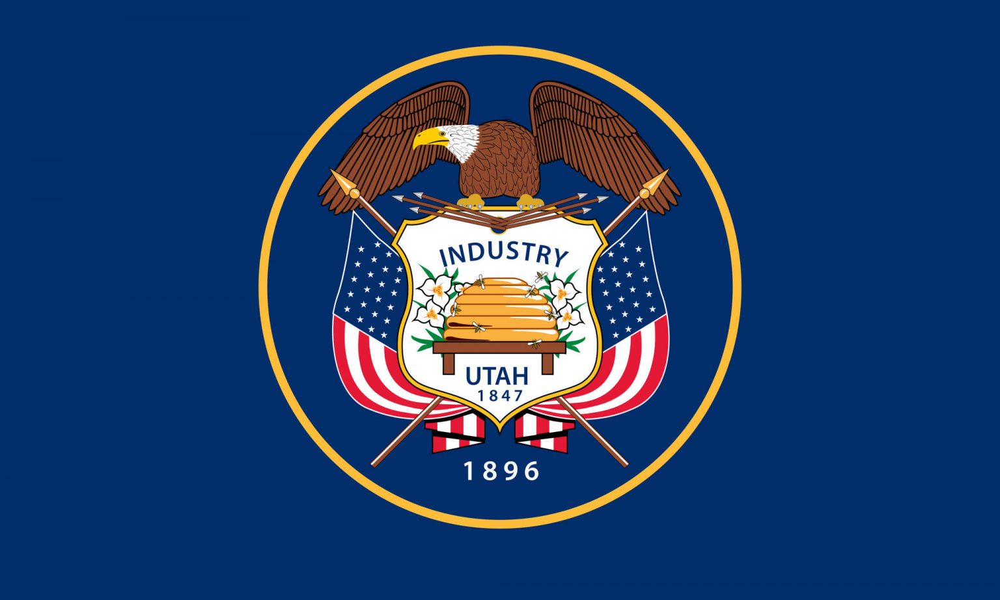

about Me
My name is Merari M. Gonzalez, I'm originally from Baja California, Mexico, and grew up in Utah, E.U.
I'm mom to 3 boys named Kingston, Gavin and Maddox, who are amazing and so very smart. I'm currently working as a Barber and at the same time I'm working on my Bachelors of science,
so that I can eventually work as a Software Developer. One of my favorite activities is learning new things, specially if it's through reading.
Utah, E.U.

Some interesting facts about the state of Utah: It is the 30th most populous and the 13th most extensive of the 50 states of the United States. Utah gets it's name from the Native American tribe,Ute. Archaelogical evidence supports the fact that the Utah region has been inhabited by Native Americans for about 12,000 years. THe state is known for it's unique geological formations called hooodoos, which can be found in places like Goblin Valley State Park. Utah was home to the shortest commercial airport runway in the United States.